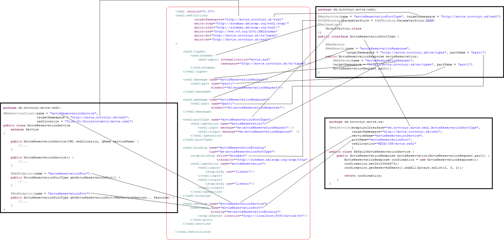

V predošlom dieli sme si ukázali príklad popisovača webovej služby v podobe WSDL súboru. Ak máme tento súbor, môžeme použiť niektoré z existujúcich nástrojov na vygenerovanie zdrojového kódu pre serverovskú časť služby i pre klienta, ktorý k nej bude pristupovať.
Tento spôsob je k dispozícii vo všetkých významných Java frameworkoch pre webové služby - teda aj v Glassfish Metro.
Samotná Java poskytuje na prístup k webovým službám viacero API združených pod rôznymi špecifikáciami. Najnovšou je v súčasnosti JAX-WS 2.0 (JSR-224), ktorá je už súčasťou JEE 5 a pri návrhu a implementácii webových služieb používa všetky vymoženosti Javy 5. Aplikačný rámec Glassfish Metro, ktorá bude pracovať nad triedami a interfejsmi JAX-WS budeme demonštrovať práve v tejto časti.
Inštalácia
Z domovskej stránky Metra si stiahneme príslušný JAR, rozbalíme na vhodné miesto, vytvoríme systémovú premennú METRO_HOME ukazujúcu na adresár inštalácie a voliteľne si dodáme cestu k skriptom do PATHu.
Generovanie serverovskej časti
Predpokladajme, že máme k dispozícii WSDL súbor z predošlej časti seriálu. Java triedy vygenerujeme nasledovným spôsobom:
SET METRO_HOME=C:/java/metro
SET PATH=%PATH%;%METRO_HOME%/bin
wsimport -keep -s src -d bin movie.wsdl
Ak by sme vynechali všetky parametre, vygenerovali by sa priamo CLASS súbory do aktuálneho adresára. -keep ponechá po generovaní zdrojové súbory, -s určí adresár pre vygenerované zdrojové súbory a -d určí, kam pôjdu skompilované CLASSy.
Vygenerujú sa nasledovné súbory:
sk\novotnyr\movie\ws\typesMovieReservationRequest.javaMovieReservationResponse.javaObjectFactory.javapackage-info.java
sk\novotnyr\movie\wsdlMovieReservationPortType.javaMovieReservationService.java
Balíček sk.novotnyr.movie.ws.types obsahuje triedy, ktoré zodpovedajú elementom a typom definovaným v XML schéme. Názov tohto balíčka je odvodený od cieľového menného priestoru (targetNamespace) v schéme. V schéme sme mali http://movie.novotnyr.sk/ws/], čo sa priamo namapuje na názov balíčka.
Na mapovanie medzi inštanciami XML schémy a objektami v Jave sa v Metre používa technológia JAXB 2.0. Vygenerované triedy presne zodpovedajú tomu, čo by sme získali použitím kompilátora xjc z implementácie JAXB. Príkladom triedy je:
package sk.novotnyr.movie.ws.types;
import java.util.*;
import java.util.List;
import javax.xml.bind.annotation.*;
@XmlAccessorType(XmlAccessType.FIELD)
@XmlType(name = "", propOrder = {
"id",
"reservedSeats"
})
@XmlRootElement(name = "movieReservationResponse")
public class MovieReservationResponse {
protected int id;
@XmlElement(type = Integer.class)
protected List<Integer> reservedSeats;
public int getId() {
return id;
}
public void setId(int value) {
this.id = value;
}
public List<Integer> getReservedSeats() {
if (reservedSeats == null) {
reservedSeats = new ArrayList<Integer>();
}
return this.reservedSeats;
}
}Všimnite si, že je to klasické POJO, kde atribúty elementu zodpovedajú inštančným premenným a anotácie určujú prepis na XML.
V balíčku sk.novotnyr.movie.wsdl sa nachádzajú interfejsy a triedy, ktoré súvisia s elementom service, resp. portType vo WSDL. Každý service sa namapuje na samostatnú triedu a každý portType tiež. Názov balíčka sa odvodí od cieľového menného priestoru WSDL súboru.
Ako sme spomínali, abstraktný port vo WSDL predstavuje množinu operácií, ktoré je možné volať. Jeho analógiou je interfejs v Jave. wsimport vygeneruje nasledovnú triedu:
package sk.novotnyr.movie.wsdl;
import javax.jws.*;
import javax.jws.soap.´*;
import javax.xml.bind.annotation.*;
import sk.novotnyr.movie.ws.types.*;
@WebService(name = "movieReservationPortType",
targetNamespace = "http://movie.novotnyr.sk/wsdl")
@SOAPBinding(parameterStyle = SOAPBinding.ParameterStyle.BARE)
@XmlSeeAlso({
ObjectFactory.class
})
public interface MovieReservationPortType {
@WebMethod
@WebResult(name = "movieReservationResponse",
targetNamespace = "http://movie.novotnyr.sk/ws/types",
partName = "part1")
public MovieReservationResponse movieReservation(
@WebParam(name = "movieReservationRequest",
targetNamespace = "http://movie.novotnyr.sk/ws/types",
partName = "part1")
MovieReservationRequest part1);
}Máme teda interfejs webovej služby, potrebujeme však aj jeho implementáciu. V princípe máme dve možnosti:
- vytvoriť triedu, ktorá implementuje interfejs
MovieReservationTypea dopísať príslušný kód - vytvoriť triedu s príslušnými metódami a anotovať tu tak, aby ukazovala na interfej, ktorá má anotáciu
@WebService.
Zvolíme si druhú možnosť:
package sk.novotnyr.movie.ws;
import java.util.Arrays;
import javax.jws.WebService;
import sk.novotnyr.movie.ws.types.MovieReservationRequest;
import sk.novotnyr.movie.ws.types.MovieReservationResponse;
@WebService(
endpointInterface="sk.novotnyr.movie.wsdl.MovieReservationPortType",
)
public class DefaultMovieReservationService {
public MovieReservationResponse movieReservation
(MovieReservationRequest part1)
{
MovieReservationResponse confirmation
= new MovieReservationResponse();
confirmation.setId(23456674);
confirmation.getReservedSeats().addAll(Arrays.asList(2, 3, 2));
return confirmation;
}
}Týmto máme všetky potrebné komponenty na to, aby sme mohli spustiť a naštartovať webovú službu. V Metre je k dispozícii trieda Endpoint, ktorá dokáže naštartovať interný HTTP server a spustiť v ňom príslušnú triedu tak, že na to postačí jediný riadok:
package sk.novotnyr.movie;
import javax.xml.ws.Endpoint;
import sk.novotnyr.movie.ws.DefaultMovieReservationService;
public class Server {
public static void main(String[] args) {
Endpoint.publish("http://localhost:8080/movies/ws",
new DefaultMovieReservationService());
}
}Navštívením adresy http://localhost:8080/movies/ws?wsdl môžeme vidieť WSDL súbor tejto služby. Tu si však všimneme jednu dôležitú vec - WSDL nie je identický s tým, z ktorého sme generovali službu! Metro totiž k publikovanej službe poskytne automaticky generované WSDL, ktorého parametre sa odvodia na základe anotácií portu, tried, metód a parametrov.
Výsek z WSDL vyzerá potom nasledovne:
<binding xmlns:ns1="http://movie.novotnyr.sk/wsdl"
name="DefaultMovieReservationServicePortBinding"
type="ns1:movieReservationPortType">
<soap:binding transport="http://schemas.xmlsoap.org/soap/http"
style="document" />
<operation name="movieReservation">
<soap:operation soapAction="" />
<input>
<soap:body use="literal" />
</input>
<output>
<soap:body use="literal" />
</output>
</operation>
</binding>
<service name="DefaultMovieReservationServiceService">
<port name="DefaultMovieReservationServicePort"
binding="tns:DefaultMovieReservationServicePortBinding">
<soap:address location="http://localhost:8080/movies/ws" />
</port>
</service>Všimnime si automaticky odvodené pomenovania:
- služba sa volá
DefaultMovieReservationServiceService - port
DefaultMovieReservationServicePort - binding
DefaultMovieReservationServicePortBinding - abstraktný port
movieReservationPortType
To by za normálnych okolností stačilo, ale keďže by sme chceli klientom zverejniť to WSDL, ktoré sme si ručne navrhli, automatické WSDL nie je to správne.
Špecifikovať zverejnené WSDL môžeme v anotácii @WebService na implementačnej triede. Použijeme na to atribút wsdlLocation. Popri tom však musíme uviesť ďalšie veci:
- presný názov služby, ktorý sa musí zhodovať s tým, ktorý je uvedený vo WSDL (inak sa použije vygenerovaný názov, a dostaneme výnimku o nekonzistencii WSDL a implementačnej triedy)
- cieľový menný priestor (inak sa odvodí z názvu balíčka implementačnej triedy)
názov portu (inak sa odvodí z názvu interfejsu) V tomto prípade budeme doťahovať WSDL súbor z
CLASSPATH.@WebService( endpointInterface="sk.novotnyr.movie.wsdl.MovieReservationPortType", targetNamespace="http://movie.novotnyr.sk/wsdl", serviceName="movieReservationService", portName="movieReservationPort", wsdlLocation="META-INF/movie.wsdl" ) public class DefaultMovieReservationService { //...Generovanie klientskej časti
Generovanie klientskej časti je jednoduché. Použitím
wsimportna WSDL dostaneme nielen serverovské triedy, ale aj klientské. Klientská časť je predstavovaná triedouMovieReservationService(tá dedí odjavax.xml.Service), ktorá je okorenená mnohými anotáciami.package sk.novotnyr.movie.wsdl; import java.net.MalformedURLException; import java.net.URL; import java.util.logging.Logger; import javax.xml.namespace.QName; import javax.xml.ws.*; @WebServiceClient(name = "movieReservationService", targetNamespace = "http://movie.novotnyr.sk/wsdl", wsdlLocation = "file:/D:/Projects/metro/movie.wsdl") public class MovieReservationService extends Service { // .. vygenerovaný kód vynechaný public MovieReservationService(URL wsdlLocation, QName serviceName) { // .. vygenerovaný kód vynechaný } public MovieReservationService() { // .. vygenerovaný kód vynechaný } @WebEndpoint(name = "movieReservationPort") public MovieReservationPortType getMovieReservationPort() { // .. vygenerovaný kód vynechaný } @WebEndpoint(name = "movieReservationPort") public MovieReservationPortType getMovieReservationPort( WebServiceFeature... features) { // .. vygenerovaný kód vynechaný } }
Možno nám udrie do očí atribút wsdlLocation, ktorý uvádza cestu k WSDL v súborovom systéme. To nie je ktoviečo. Napraviť to môžeme troma spôsobmi:
- buď budeme používať
wsimportnad internetovou URL adresou alebo použijeme pri
wsimporte parameter-wsdllocation, kde nastavíme URL používanú u klienta.wsimport -keep -wsdllocation http://ics.upjs.sk/~novotnyr/java/web-services/movies/movie.wsdl movie.wsdlalebo sa zmierime s týmto faktom, ale budeme musieť URL k WSDL zadávať pri konštruovaní tejto triedy
Použitie klienta
Použitie klienta webovej služby je potom priamočiare. Jediným problémom je šaškovanie s dátumom. V tomto prípade wsimport nevygeneroval inštančné premenné s klasickými java.util.Date, ale s triedami zodpovedajúcimi XML typom. (Dôvodom je to, že XML typy pre prácu s dátumom a časom môžu niekedy reprezentovať väčší rozsah hodnôt než java.util.Date).
package sk.novotnyr.movie;
import javax.xml.datatype.DatatypeConfigurationException;
import javax.xml.datatype.DatatypeConstants;
import javax.xml.datatype.DatatypeFactory;
import javax.xml.datatype.XMLGregorianCalendar;
import sk.novotnyr.movie.ws.types.MovieReservationRequest;
import sk.novotnyr.movie.ws.types.MovieReservationResponse;
import sk.novotnyr.movie.wsdl.MovieReservationPortType;
import sk.novotnyr.movie.wsdl.MovieReservationService;
public class Client {
public static void main(String[] args)
throws DatatypeConfigurationException
{
MovieReservationService service = new MovieReservationService();
MovieReservationPortType port = service.getMovieReservationPort();
MovieReservationRequest request = new MovieReservationRequest();
request.setTitle("Godzilla");
request.setNumberOfTickets(2);
XMLGregorianCalendar date
= DatatypeFactory
.newInstance()
.newXMLGregorianCalendarDate(
2008, 12, 12,
DatatypeConstants.FIELD_UNDEFINED);
request.setDate(date);
MovieReservationResponse response
= port.movieReservation(request);
System.out.println(
response.getId()
+ " "
+ response.getReservedSeats());
}
}Mapovanie WSDL elementov na Java elementy
wsdl:service
- mapovaný na implementačnú triedu (
DefaultMovieService) - anotácia
@WebService namenamapovaný naserviceName- menný priestor namapovaný cez
targetNamespacemá vplyv na balíček triedy
wsdl:port
namenamapovaný naportNamevo@WebServicena implementačnej triede- referencia na abstraktný port cez atribút
endpointInterface
wsdl:portType
- mapovaný na interfejs (
MovieReservationPortType) - anotácia
WebService namenamapovaný nanamev anotácii- menný priestor namapovaný cez
targetNamespacemá vplyv na balíček
wsdl:operation
- mapovaný na metódu interfejsu
- anotácia
@WebMethod
wsdl:binding
- mapovaný na interfejsi
- anotácia
SOAPBinding - možnosť špecifikovať štýl (document/rpc, literal/encoded, wrapped/bare)
wsdl:message
- mapovaný na návratové hodnoty, resp. parametre metód v interfejse
- anotácia
@WebResult(pre návratové hodnoty) - anotácia
@WebParam(pre parametre metód) namemapovaný na parameternamev anotácii- menný priestor namapovaný cez
targetNamespace
wsdl:part
- možnosť pomenovať parametre v metódach interfejsu
namemapovaný na atribútpartNamev anotácii@WebResult/@WebParam
wsdl:types
- anotácia
XmlSeeAlsona interfejsi - elementy XML schémy mapované cez anotácie JAXB 2.0
Prehľadová schéma:
Nasledovná schéma zobrazuje prepojenie medzi WSDL elementami a triedami grafickým spôsobom:
